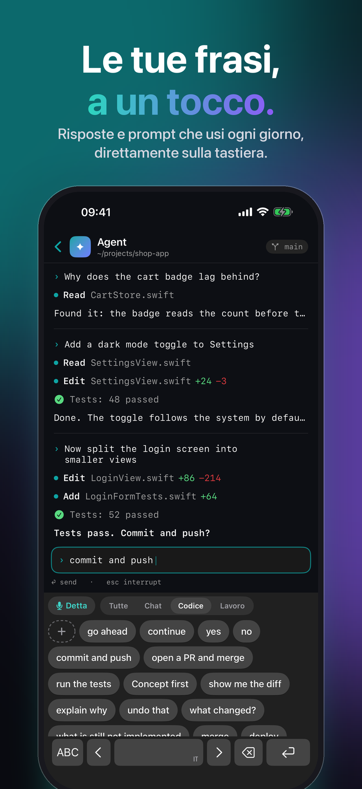
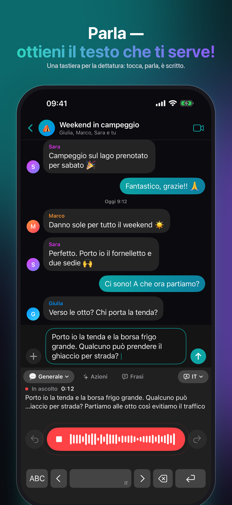
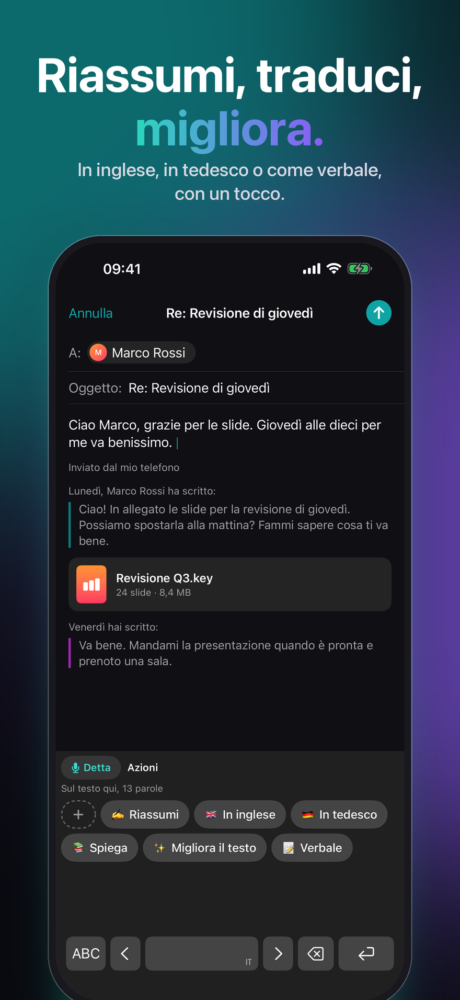
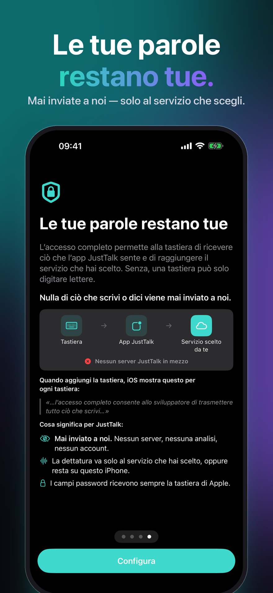
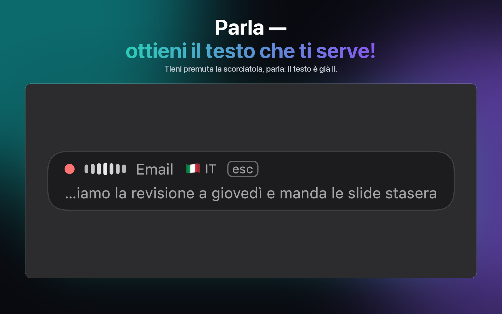
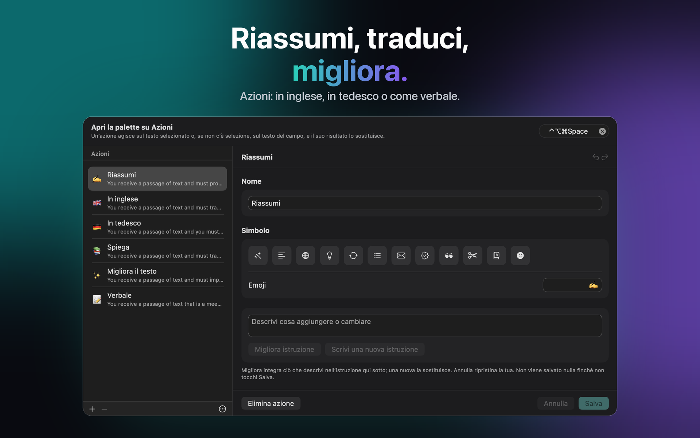
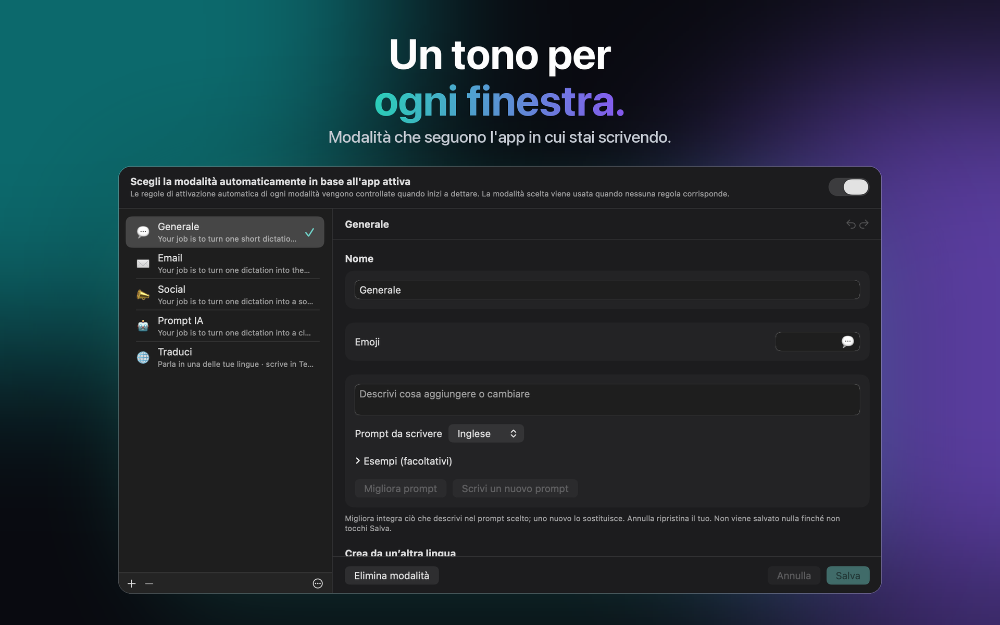

Per Mac, Windows, iPhone e iPad
Riunioni trascritte senza bot
Tu parli. Lui scrive. JustTalk è dettatura e note per il tuo Mac: voce in testo in qualsiasi app, rifinita dall'IA, e verbali delle riunioni senza nessun bot nella chiamata.



Le tue parole restano tue

Nulla di ciò che scrivi o dici viene mai inviato a noi.
Su iPhone e iPad la tastiera chiede l'accesso completo. L'accesso completo permette alla tastiera JustTalk di ricevere ciò che l'app JustTalk sente e di raggiungere il servizio che hai scelto. Senza, una tastiera può solo digitare lettere.
- Mai inviato a noi. Nessun server, nessuna analisi, nessun account.
- La dettatura va solo al servizio che hai scelto, oppure resta sul tuo dispositivo.
- I campi password ricevono sempre la tastiera di Apple.
- Ciò che detti non viene conservato.
Verificalo tu stesso: sull'iPhone, Impostazioni → Privacy e sicurezza → Resoconto privacy delle app — e in JustTalk, Impostazioni → Privacy → Cosa ha lasciato il tuo iPhone, quali servizi ha contattato JustTalk, senza nessuna delle tue parole.
Ottieni JustTalk
La stessa app su ogni piattaforma, con le stesse modalità, le stesse lingue e la stessa scelta tra locale e cloud. Ognuna è un acquisto una tantum separato: uno sull'App Store per Mac, un altro per iPhone e iPad e una licenza a sé per Windows, non ancora in vendita. Su Mac, iPhone e iPad, iCloud mantiene uguali modalità, frasi, azioni e impostazioni; Windows partecipa tramite il file di configurazione.
macOS
macOS 14 o successivo, Apple silicon o Intel. Detta in qualsiasi app con una scorciatoia.
Windows
Windows 10 (1809) o successivo, x64, x86 o ARM64. L'installer è un MSIX firmato.
iPhone & iPad
iOS e iPadOS 26 o successivo. Una tastiera da cui dettare in qualsiasi app; JustTalk Note per note vocali, note scritte e riunioni in sala; e un menu di condivisione per le registrazioni che hai già.
Cosa fa
I software di dettatura di solito ti danno una trascrizione e lasciano a te il lavoro di sistemarla. JustTalk porta a termine il lavoro: premi un tasto, parla, e la frase già pulita viene incollata nell'app che hai già davanti — nessuna finestra a cui passare, niente da copiare a mano.
Scritto, non trascritto
Un modello linguistico toglie le esitazioni e corregge la punteggiatura. Quello che arriva nel campo è qualcosa che avresti scritto tu stesso.
Locale o cloud, decidi tu
Whisper e un modello locale girano interamente sul tuo computer, gratis e offline. Oppure collega Google, OpenAI, Groq, Mistral o Anthropic con la tua chiave e paghi loro direttamente.
100 lingue
Rilevate mentre parli, anche a metà frase. Nessuna impostazione da cambiare quando passi da una all'altra.



Quanto costa
L'app è un pagamento unico. I modelli sono gratis se li fai girare in locale, e a consumo se usi un fornitore cloud — la bolletta è la loro, non la nostra. Dieci minuti di dettatura al giorno su Groq costano ben sotto un dollaro al mese ai loro tariffari di settembre 2026; una giornata intensa di 45 minuti arriva a circa uno-tre dollari. Tutto è sbloccato per sette giorni, senza nulla tenuto da parte e senza bisogno di carta di credito.
Dopo la prova la versione gratuita continua a funzionare ogni giorno con 2 dettature fino a 30 caratteri ciascuna, 5 frasi, 5 azioni e, su iPhone e iPad, 5 correzioni di scrittura. JustTalk Pro rende tutto illimitato con un unico pagamento — con un servizio di IA nel cloud, l'uso è poi limitato solo dal tuo accesso a quel servizio. Non è un abbonamento e non c'è niente da disdire.
Novità su iPhone e iPad
Profili IA
Una sola scelta decide come JustTalk ascolta e scrive: «Privato» tiene tutto sul tuo iPhone; Groq, il tuo server o un profilo tuo usa i servizi che configuri, con la tua chiave.
Suggerimenti durante la scrittura
Parole suggerite sopra le lettere, e «Correggi ciò che scrivo» sistema i refusi quando fai una pausa, mai le tue parole.
Ricorda le tue parole
Correggi un nome una volta e JustTalk si offre di ricordarlo: la volta dopo è scritto giusto.
Funziona offline
Se la connessione cade a metà dettatura, subentra il riconoscimento dell'iPhone e non si perde nulla.
Avvia da ovunque
Avvia una sessione con il tasto Azione, il Centro di Controllo o Tocco posteriore, senza aprire l'app.
Ultima dettatura
Hai cambiato app e il testo non è arrivato? Un tocco riscrive l'ultima dettatura.
Azioni dalle lettere
✨ accanto a Frasi apre le tue azioni direttamente dalle lettere, e un pannello aperto lì ti riporta alle lettere.
Modalità in base all'app
Impostazioni → Modalità crea un'automazione di Comandi Rapidi per ogni app: Email in Mail, Prompt IA nella tua app di chat IA, e la modalità torna com'era quando esci.
Prova questa modalità
Sei dettature di esempio in ciascuna delle tue lingue, rifinite e controllate, con ciò che non va detto in parole semplici — e da lì un'istruzione migliore.
Come lo usano
Email e chat
General pensa a tutti i giorni; le altre modalità hanno il proprio tono e lessico. Su Mac e Windows quella giusta segue l'app già da subito — Email in Mail o Outlook, Prompt IA in ChatGPT o Claude; su iPhone e iPad lo fa un'automazione di Comandi Rapidi.
Riunioni
Su Mac e Windows registri entrambi i lati di una chiamata; su iPhone e iPad appoggi il dispositivo sul tavolo per una riunione in sala. In entrambi i casi ottieni la trascrizione di tutta la conversazione e il verbale. Poi fai una domanda a un'intera cartella: ogni punto della risposta rimanda al momento in cui è stato detto.
Frasi e Azioni
Ciò che scrivi di continuo è a un tocco di distanza, sulla tastiera dell’iPhone e nella palette del computer. Un’Azione riscrive la selezione, o l’intero campo, con un’istruzione che scrivi tu — o che scrive il modello.
Registrazioni
Un memo vocale, una lezione, un’intervista: aprilo o condividilo con JustTalk e ottieni la trascrizione, su ogni piattaforma.
In locale o nel cloud — decidi tu, e ti diciamo quanto costa ciascuno
JustTalk è l'app intorno ai modelli, non i modelli. Eseguili in locale — sul dispositivo, o su un computer con Whisper e llama.cpp, Ollama o LM Studio — e non si carica né si paga nulla. Oppure collega un fornitore cloud con una chiave creata da te: più veloce e preciso, e ti fattura direttamente. L'informativa sulla privacy dice esattamente cosa invia ogni opzione, e la dichiarazione sull'IA quale IA fa cosa. Quanto i risultati siano precisi, rifiniti e rapidi dipende dai modelli che scegli e dalle modalità e azioni che dai loro — puoi cambiare entrambi in qualsiasi momento; i termini d'uso dicono di più.
Fatto secondo le regole di trasparenza del regolamento UE sull'IA. Niente va a un servizio di IA finché non lo consenti, e verbali, riassunti e altri testi scritti da un'IA sono contrassegnati come tali nell'app e in ogni esportazione. La dettatura è l'unica eccezione: sono parole tue, rifinite e scritte in un'altra app, dove nessun contrassegno può seguirle. La dichiarazione sull'IA spiega tutto.
Detta in 100 lingue, tra cui inglese, tedesco, francese, spagnolo, italiano, portoghese, giapponese, coreano, greco, ucraino e russo.
JustTalk
Gratis da provare, sbloccato con un acquisto separato su Mac, su iPhone e iPad e su Windows. 100 lingue, e le tue parole vanno solo ai servizi che scegli.